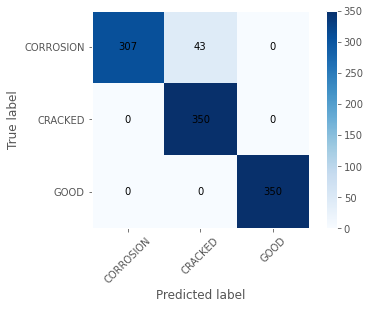
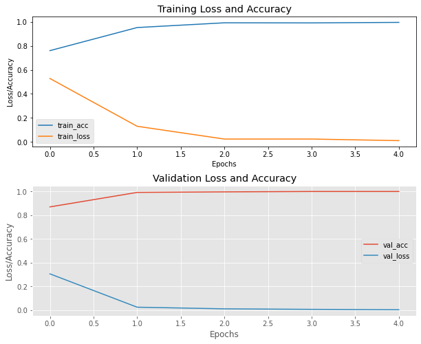

Federal University of Technology, Minna · Mechatronics Engineering · Python / TensorFlow / Keras
Context & problem
Pipelines play an essential role in energy, water and industrial infrastructure. Detecting surface deterioration early can support safer inspection practices, but building automated computer vision systems requires both representative images and carefully assessed machine learning models.
My final-year project investigated two connected questions: how to collect and annotate pipeline-defect imagery, and how effectively a CNN could classify defect-related images in an experimental setting.
1. Original dataset development
I developed a collection of 2,120 pipeline images for defect-recognition research. Images were acquired with a camera-based workflow under varying lighting and environmental conditions. The research included data organization, quality checks, and annotation of approximately 500 selected images.
Importantly, the original dataset was a distinct research output. It was not the same dataset used to train the saved CNN model described below.
2. CNN model experiment
For the classification experiment, I used a separate image dataset: 4,500 images in the training directory, with a validation split, and 1,050 images in the test directory.
The model processed images at 120 × 120 pixels and used convolutional layers, pooling and dropout, trained with Adam and sparse categorical cross-entropy. It classified images into three labels: Corrosion, Cracked and Good.
The saved notebook also explored SVM, Decision Tree and K-Nearest Neighbours approaches using extracted features.
3. Evaluation & results
The saved CNN run achieved 95.90% test accuracy and 100% validation accuracy at the final training epoch. The test evaluation was performed on 1,050 images.


Of the 1,050 test images, 1,007 were classified correctly. All 43 errors occurred in the Corrosion class, where the model predicted Cracked instead. This is an important limitation that a single aggregate accuracy figure would obscure.
4. Limitations & what I'd improve
- Independent validation: Evaluate on fresh pipeline imagery and different field conditions.
- Dataset provenance: Document exactly how each dataset was sourced, split and prepared.
- Class-specific weaknesses: Investigate why corrosion was confused with cracking.
- Localization: Explore detection or segmentation instead of image-level classification alone.
- Deployment: Test robustness and performance before considering integration with an inspection system.
Reflection
This research strengthened my understanding of how data acquisition, software, machine learning and engineering constraints interact. It reinforced a lesson that has shaped my technical interests: the performance of one component matters, but dependable systems require attention to the entire process.
Project resources
These Drive links may require permission. Public hosting or an approved GitHub release should be finalized before launch.